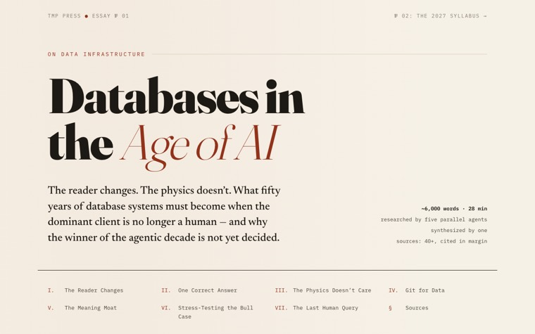

eliaz : 2026 · living preprint · v2
2026
Yossi Eliaz

0public repos
0live pages here
0years on GitHub
0followers
What fifty years of database systems must become when the dominant reader of data is no longer human.
Read it live →
Fig. 00 — captured liveInteractive essays, field guides and experiments — all live on GitHub Pages. Every figure is a real screenshot of a real running page.
Longer reads on how the software world is being rearranged.
Market microstructure, made touchable.
Receipts, continuously updated.
Build → measure → write it down. ✨